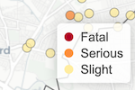

Maps
The Lab produces interactive maps based on the Leaflet library using JavaScript, R and Shiny. The maps are designed to allow users to interactively interrogate the data and also provide links to the raw data.
 Explore
ExploreDiscover the different geographic areas of Trafford and visualise all of our spatial datasets in one application. Use the geolocation facility (on supported devices with the user's permission) to see where you are and discover what is around you.
Tools
 Plotter
PlotterCreate and edit map features in the form of lines, polygons, circles and markers and save the results. Load previously saved data and add to it, or use it in other applications such as Graphical Information Systems (GIS) software.
Custom Maps
Some of the datasets available in our Explore tool have also been visualised in custom maps. These maps have specific functionality and features relevant to the data being presented. Defibrillators in Trafford
Defibrillators in TraffordLocations of Automated External Defibrillators (AEDs) in Trafford. The locations are available to download as open data in a variety of file formats. The data set was crowdsourced. If you know of a defibrillator that has not been included then please email or tweet us.
 English indices of deprivation 2015 for Greater Manchester
English indices of deprivation 2015 for Greater ManchesterVisualising the data released by the Department for Communities and Local Government for Lower-layer Super Output Areas (LSOA) in Greater Manchester.
 Green spaces in Trafford
Green spaces in TraffordExplore the parks, playing fields, public gardens and other accessible recreational and leisure features in Trafford using data from OS Greenspace.
Trafford Road Casuality Map
Interactive visualisation of road casualty data recorded by Greater Manchester Police during 2017.
Interactive visualisation of road casualty data recorded by Greater Manchester Police during 2017.